Lane CLCD-HM, 2026-09-24. Every panel image is 320x240 pixels drawn with the firmware's own 8x16 font and quantised to RGB565. "Today" is the real renderer's output (clcd.c via clcd_preview, feat/rm-ila-mint, v0.11). "Proposed" is built from docs/design/clcd/tokens.json. Proposed rows target the Linux harness only (DL4).
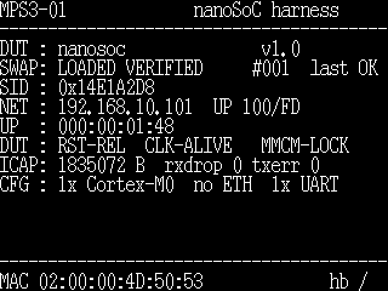
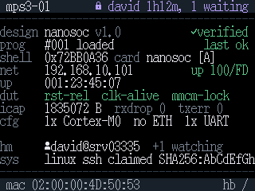
Bare-metal v0.11 reports only the owner (display query). The mirror is
rebuilt by Harness Manager from what it read, not read from the panel.
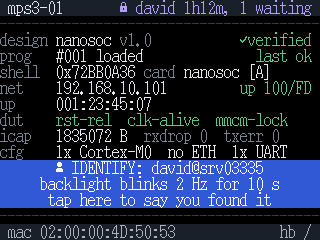
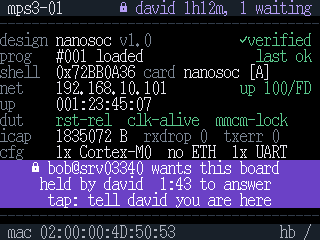
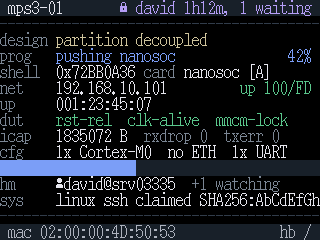
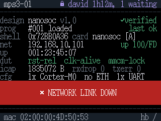
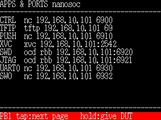
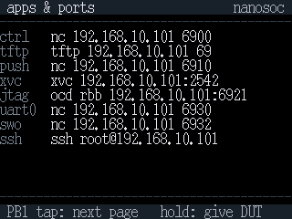
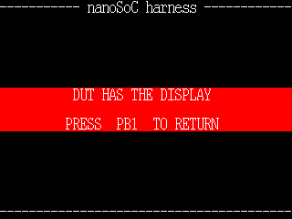
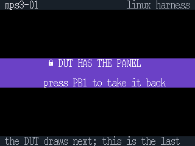
| panel role | token value fg / bg (dark theme, black panel bg) | panel RGB565 fg / bg | if R/B swapped |
|---|---|---|---|
| text | Aa #e4e7ec / #000000 | Aa 0xE73D / 0x0000 | Aa |
| label | Aa #7e8794 / #000000 | Aa 0x7C32 / 0x0000 | Aa |
| rule | Aa #353d49 / #000000 | Aa 0x31E9 / 0x0000 | Aa |
| chrome | Aa #a9b1bd / #1b2028 | Aa 0xAD97 / 0x1905 | Aa |
| ok | Aa #5cc68c / #000000 | Aa 0x5E31 / 0x0000 | Aa |
| warn | Aa #e8ad58 / #000000 | Aa 0xE56B / 0x0000 | Aa |
| err | Aa #f08b82 / #000000 | Aa 0xEC50 / 0x0000 | Aa |
| busy | Aa #7d9cf4 / #000000 | Aa 0x7CFE / 0x0000 | Aa |
| unk | Aa #cbc19e / #000000 | Aa 0xCE13 / 0x0000 | Aa |
| held | Aa #b69cf5 / #000000 | Aa 0xB4FE / 0x0000 | Aa |
| banner-err | Aa #ffffff / #b1261d | Aa 0xFFFF / 0xB124 | Aa |
| banner-held | Aa #ffffff / #6b3fc4 | Aa 0xFFFF / 0x6A18 | Aa |
| banner-busy | Aa #ffffff / #2f5bd3 | Aa 0xFFFF / 0x32DA | Aa |
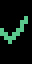
okcircle-check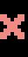
errcircle-x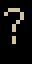
unkcircle-help